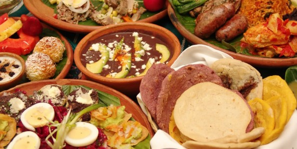

Gastronomia Española

Quizás no te des cuenta, pero la gastronomía es parte central y fundamental de nuestra sociedad.
Tan solo nuestras tradiciones, ritos y celebraciones más importantes giran alrededor de los alimentos y lo que estos aportan a nuestro día.
¿Te imaginas una fiesta de cumpleaños sin pastel? ¿Un lunes sin frijol con puerco? ¿Un domingo en la mañana sin cochinita?
Y es que a través de la gastronomía podemos conocer muchas cosas sobre la sociedad que la conforma ya que esta la ha ido amoldando a los mismos cambios en los que ha vivido.
Por ejemplo, gracias a esta podemos apreciar las historias de los pueblos a través de la mezcla de los sabores.
Ver más
Gastronomia Guatemalteca

Guatemala compite desde hace tiempo con los demás países de Latinoamérica para convertirse en un destino destacado de turismo gastronómico. Su privilegiada situación, al sur de México y rodeada de dos diferentes mares, le convierten en fuente de diversidad de productos agro-alimentarios y de culturas de cocina. Este año Guatemala estará en FIBEGA (la Feria Iberoamericana de Gastronomía), que se celebra del 20 al 22 de noviembre en Mérida (España) para mostrar al mundo su cultura gastronómica. ¿Quieres saber más?
Ya las culturas mayas que habitaban el país antes del descubrimiento de América tenían sus propias costumbres, que se vieron modificadas con la llegada de los españoles y la variedad de ingredientes y técnicas culinarias que introdujeron en el país. Así mismo, la variedad de productos autóctonos provocó un gran tráfico de exportación, destacando el cacao, el tomate, la vainilla o los chiles.
Ver más